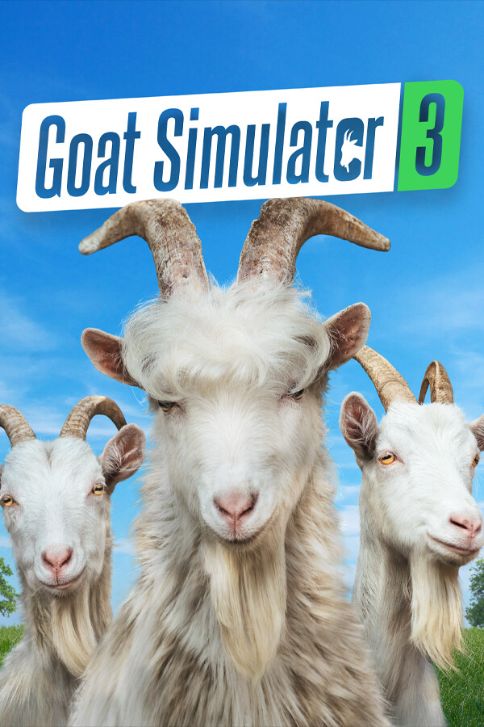

Goat Simulator 3
Goat Simulator 3
Details
 |
|
| Playtime | Not Played |
| Last Activity | Never |
| Added | 10/11/2025 14:55:33 |
| Modified | 10/11/2025 14:55:54 |
| Completion Status | Not Interested |
| Library | PlayStation |
| Source | PlayStation |
| Platform | Sony PlayStation 5 |
| Release Date | 2/15/2024 |
| Community Score | 95 |
| Critic Score | 70 |
| User Score | |
| Genre | Adventure Casual Simulation |
| Developer | Coffee Stain North |
| Publisher | Coffee Stain Publishing |
| Feature | Achievements Captions Available Cloud Saves Co-Op Family Sharing Full Controller Support Multi-Player Online Co-Op Shared/Split Screen Shared/Split Screen Co-Op Single-Player Trading Cards |
| Links | Epic Official Website YouTube Discord Twitch Steam Subreddit Community Wiki Wikipedia Google Play App Store (iPhone) Xbox Playstation Nintendo |
| Tag | PlayStation Plus |
Description
Pilgor's baaack! Take life by the horns in Goat Simulator 3 today!
Gather your herd and venture forth into Goat Simulator 3; an all-new*, totally realistic**, sandbox farmyard*** experience that puts you back in the hooves of no one's favourite female protagonist.
Join Pilgor and get ready to create your own whirlwind adventure on the island of San Angora. Lick, headbutt, and ruin your way through our open world in the biggest waste of your time since the original Goat Simulator! We won't tell you how to play (except in the tutorial), but merely provide the means to be the goats of your dreams.

If your dreams contain more than one goat, that works for us! In Goat Simulator 3, you can invite up to three friends in local or online co-op to create carnage as a team, or compete in mini-games and then not be friends anymore. And don't worry, there are plenty of customisation options so you and your pals don't wear clashing outfits.

Goat Simulator 3 first launched in November 2022, and since then our “game designers” have been hard at work adding even more weird and wondrous stuff. As well as all the original goat-y goodness, Steam players will be able to experience all content from the game’s post-launch updates; including the Mandatory Holiday Update, Operation Crackdown and the Shadiest Update, with more to come!

KEY FEATURES:
- You can be a goat
- You can be a goat… on Steam!
- Three of your friends can be goats too, and join you in local or online co-op
- No really, there are so many goats. If you want to be fancy you can wear the skins of tall goats, stripey goats, and many more. There's a goat for everyone!
- Dress up your goat in all kinds of nonsense, from toilet rolls to tea trays. Put on a jetpack for all we care
- We have actual 'game designers' who have worked to create 'an okay amount of content'; including events, NPCs to mess with, physics, status effects, collectables, easter eggs, lies, betrayal, heartbreak
- They've added mini-games too, lots of mini-games (seven is a lot, right?)
- They’ve even added a bunch of extra content since the game first launched, aren’t you a bunch of lucky kids?

DISCLAIMER:
Since it launched in November 2022, Goat Simulator 3 has been a completely stupid game. It is still a completely stupid game today, except now it has more stuff! By this point if you're not sure what you're getting into, we can't help you.
NOTES:
* Goat Simulator 3 is technically not completely new, but it is new to Steam users!
** Our game is very realistic, if you happen to be a digital goat with a proclivity for ragdolling.
*** False alarm, this one is actually true.
Gather your herd and venture forth into Goat Simulator 3; an all-new*, totally realistic**, sandbox farmyard*** experience that puts you back in the hooves of no one's favourite female protagonist.
Join Pilgor and get ready to create your own whirlwind adventure on the island of San Angora. Lick, headbutt, and ruin your way through our open world in the biggest waste of your time since the original Goat Simulator! We won't tell you how to play (except in the tutorial), but merely provide the means to be the goats of your dreams.
If your dreams contain more than one goat, that works for us! In Goat Simulator 3, you can invite up to three friends in local or online co-op to create carnage as a team, or compete in mini-games and then not be friends anymore. And don't worry, there are plenty of customisation options so you and your pals don't wear clashing outfits.
Goat Simulator 3 first launched in November 2022, and since then our “game designers” have been hard at work adding even more weird and wondrous stuff. As well as all the original goat-y goodness, Steam players will be able to experience all content from the game’s post-launch updates; including the Mandatory Holiday Update, Operation Crackdown and the Shadiest Update, with more to come!
KEY FEATURES:
- You can be a goat
- You can be a goat… on Steam!
- Three of your friends can be goats too, and join you in local or online co-op
- No really, there are so many goats. If you want to be fancy you can wear the skins of tall goats, stripey goats, and many more. There's a goat for everyone!
- Dress up your goat in all kinds of nonsense, from toilet rolls to tea trays. Put on a jetpack for all we care
- We have actual 'game designers' who have worked to create 'an okay amount of content'; including events, NPCs to mess with, physics, status effects, collectables, easter eggs, lies, betrayal, heartbreak
- They've added mini-games too, lots of mini-games (seven is a lot, right?)
- They’ve even added a bunch of extra content since the game first launched, aren’t you a bunch of lucky kids?
DISCLAIMER:
Since it launched in November 2022, Goat Simulator 3 has been a completely stupid game. It is still a completely stupid game today, except now it has more stuff! By this point if you're not sure what you're getting into, we can't help you.
NOTES:
* Goat Simulator 3 is technically not completely new, but it is new to Steam users!
** Our game is very realistic, if you happen to be a digital goat with a proclivity for ragdolling.
*** False alarm, this one is actually true.